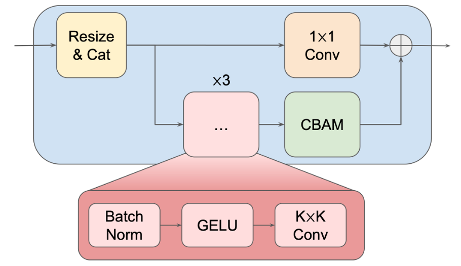
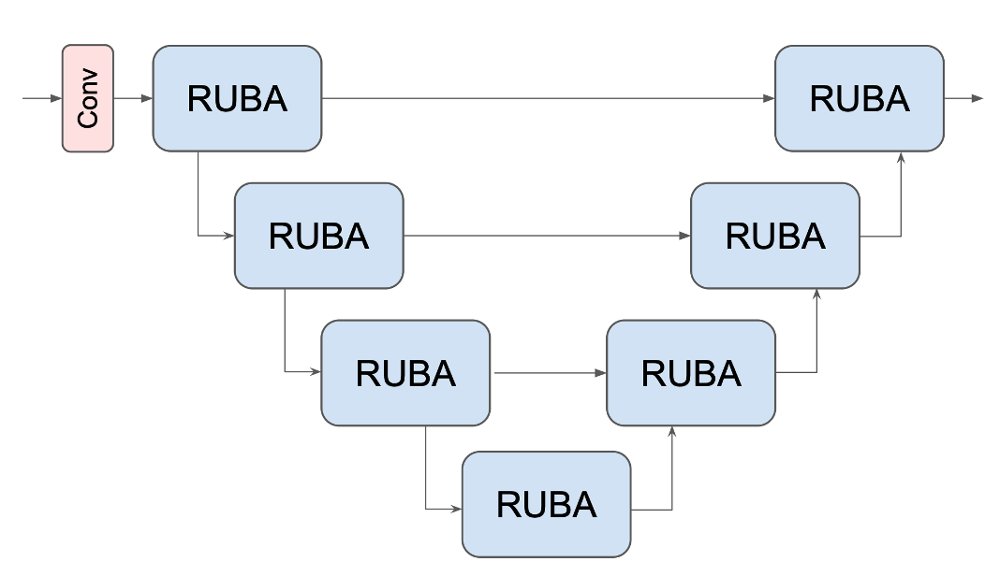

Qualitative Results
Matches obtained by plugging SANDesc into existing keypoint detectors (top rows) against the detectors' original descriptors (bottom rows). Green lines mark correct matches, red lines mark incorrect ones.


Abstract
We introduce SANDesc a Streamlined Attention-based Network for Descriptor extraction that aims to improve on existing architectures for keypoint description. Our descriptor network learns to compute descriptors that improve matching without modifying the underlying keypoint detector. We employ a revised U-Net-like architecture enhanced with Convolutional Block Attention Modules and residual paths, enabling effective local representation while maintaining computational efficiency. We refer to the building blocks of our model as Residual U-Net Blocks with Attention. The model is trained using a modified triplet loss in combination with a curriculum learning–inspired hard negative mining strategy, which improves training stability. Extensive experiments on HPatches, MegaDepth-1500, and the Image Matching Challenge 2021 show that training SANDesc on top of existing keypoint detectors leads to improved results on multiple matching tasks compared to the original keypoint descriptors. At the same time, SANDesc has a model complexity of just 2.4 million parameters. As a further contribution, we introduce a new urban dataset featuring 4K images and pre-calibrated intrinsics, designed to evaluate feature extractors. On this benchmark, SANDesc achieves substantial performance gains over the existing descriptors while operating with limited computational resources.


Quantitative Results
Graz4K @ 4K
MegaDepth-1500 @ 2048 kpts
IMC 2021 (avg over 9 scenes)
AUC@5 (higher is better) across three matching benchmarks. DeDoDe-G runs out of memory on Graz4K at 4K.
Graz4K Sparse Reconstructions
BibTeX
@inproceedings{durso2026sandesc,
title={A Streamlined Attention-based Network for Descriptor Extraction},
author={D'Urso, Mattia and Santellani, Emanuele and Sormann, Christian and Rossi, Mattia and Kuhn, Andreas and Fraundorfer, Friedrich},
booktitle={2026 International Conference on 3D Vision (3DV)},
year={2026},
organization={IEEE Computer Society}
}